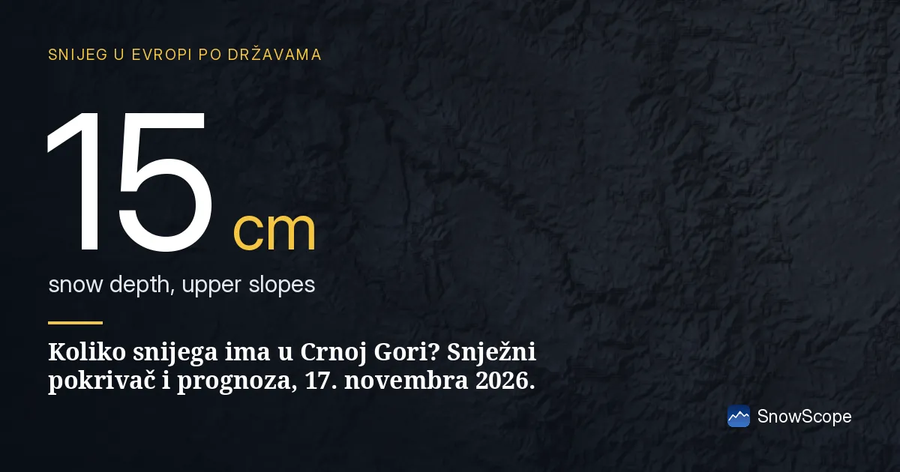

Koliko snijega ima u Crnoj Gori? Snježni pokrivač i prognoza, 17. novembra 2026.
Utorak, 17. novembra: snijeg pokriva oko 20 km² planina u Crnoj Gori. To je 60 km² manje nego jučer.
Pogledajte prognozu snijega za Ski centar Savin kuk u aplikaciji SnowScopeVisina snijega, upozorenja i 3D karta, besplatno.
Snježni pokrivač danas
Teren je pretežno bijel od oko 2.200 m naviše. Prije sedam dana bilo je 280 km²: od tada se otopilo 260 km².
| Ski-centar | Visina snijega | Novi snijeg, 72 h | Naredni dani | Vrh |
|---|---|---|---|---|
| Ski centar Savin kuk | 15 cm | 10 cm | 5 cm | 2.175 m |

Gdje je pao novi snijeg
Posljednja tri dana gotovo nije padao snijeg: maksimum je 0 cm.
Šta to znači na stazama
Otopljenje topi pokrivač: ujutro tvrd snijeg, poslijepodne mokar.
Visina snijega po nadmorskoj visini
Visina snijega zavisi od nadmorske visine: 2.000–2.500 m: prosječno 1 cm (15 % pod snijegom).
Naredni dani
Prognoza novog snijega: do 1 cm za tri dana i do 15 cm za sedam dana.
Najsnježniji dan: ponedjeljak, 23. novembra, do 9 cm.
Najbolji ski-centri trenutno
Prednjači Ski centar Savin kuk: 15 cm na gornjem dijelu staza.
Savjeti za skijaše
- Prije polaska provjerite rade li liftovi.
About these numbers
Resort snow depths are the deepest snow on the resort's upper slopes from the SnowScope snow model (about 1 km, run of 17. novembra); they are estimates for an area, not a measurement at one point. Station values are measurements on the date shown. Forecasts can change. Always read the official avalanche bulletin before going off-piste.
Cite this report
For research, teaching or the press: the numbers and charts are free to reuse under CC BY 4.0 with this citation.
SnowScope (2026), Koliko snijega ima u Crnoj Gori? Snježni pokrivač i prognoza, 17. novembra 2026., https://snowscope.app/blog/cnr/2026/11/montenegro-snow-report-17-november-2026.html, accessed 2026-11-17
SnowScope (Atlas Labs). (2026, November 17). Koliko snijega ima u Crnoj Gori? Snježni pokrivač i prognoza, 17. novembra 2026.. SnowScope snow reports. https://snowscope.app/blog/cnr/2026/11/montenegro-snow-report-17-november-2026.html
BibTeX
@misc{snowscope2026montenegrosnowreport17no,
author = {{SnowScope (Atlas Labs)}},
title = {Koliko snijega ima u Crnoj Gori? Snježni pokrivač i prognoza, 17. novembra 2026.},
year = {2026},
month = nov,
howpublished = {\url{https://snowscope.app/blog/cnr/2026/11/montenegro-snow-report-17-november-2026.html}},
note = {Published 2026-11-17 13:54 UTC; accessed 2026-11-17}
}· CC BY 4.0 · Methods, data and tools →
Ski centar Savin kuk: snow and temperature by height, this winter vs last (tools) →
Follow Ski centar Savin kuk
Besplatno: poruka kada dolazi novi snijeg i prognoza svako jutro.